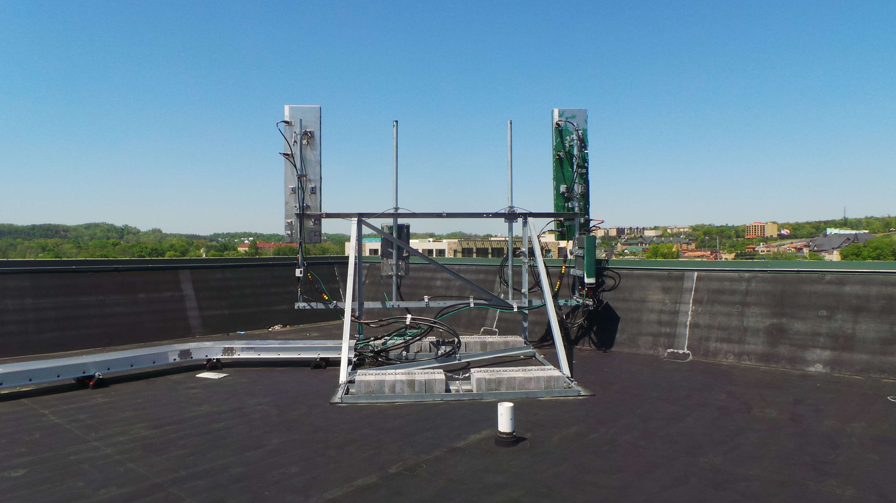
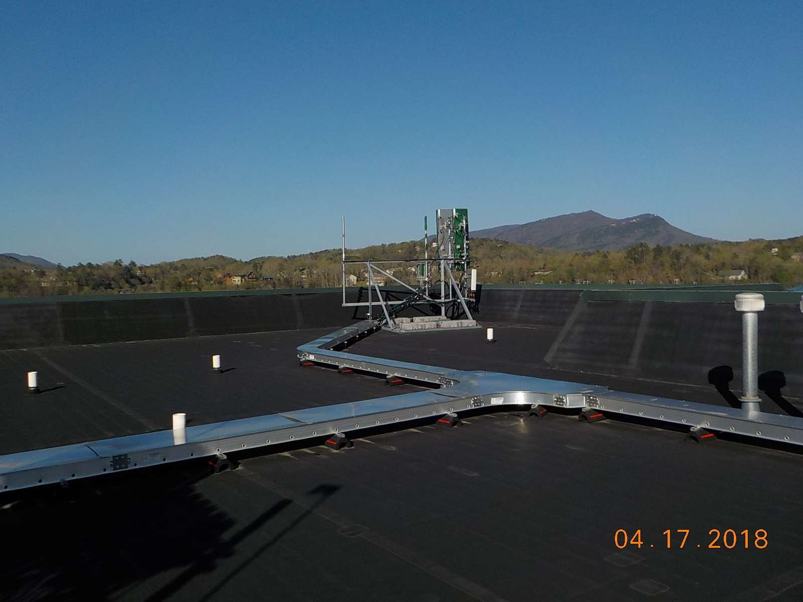
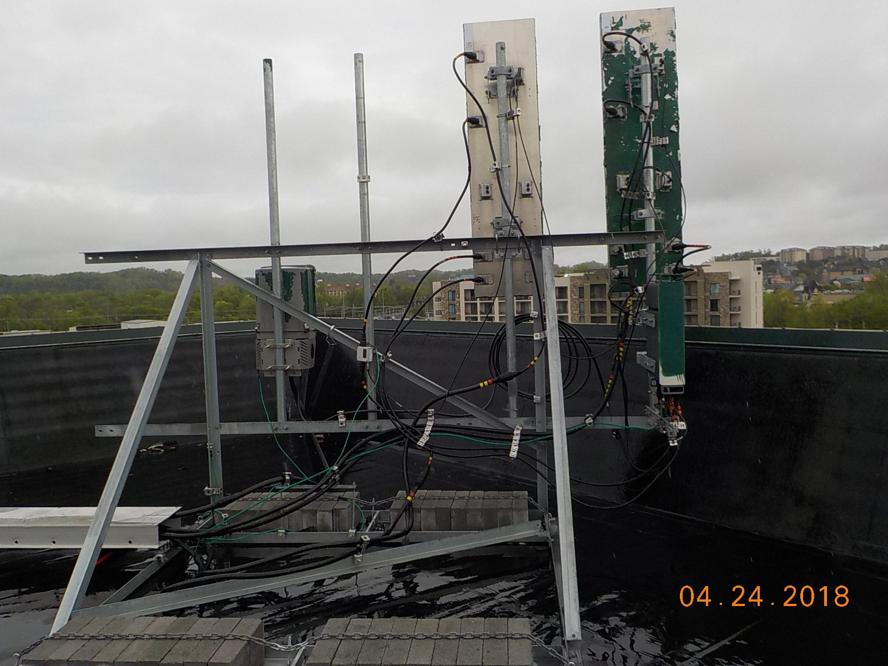
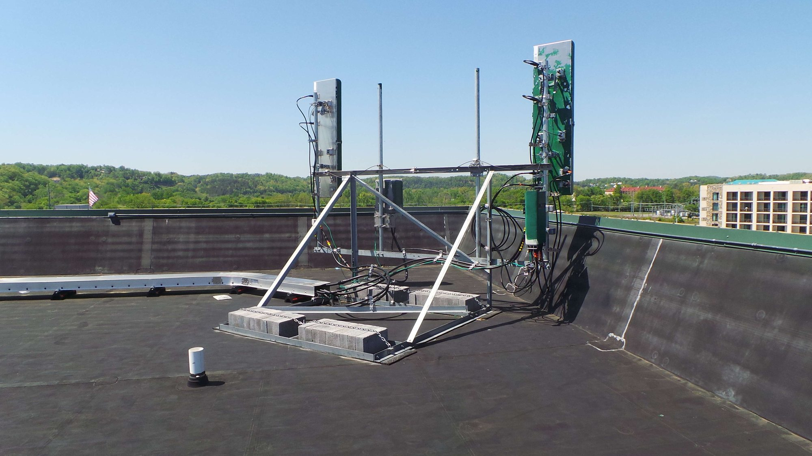
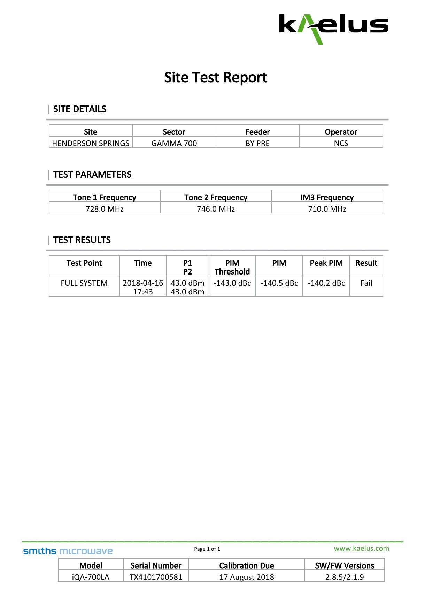
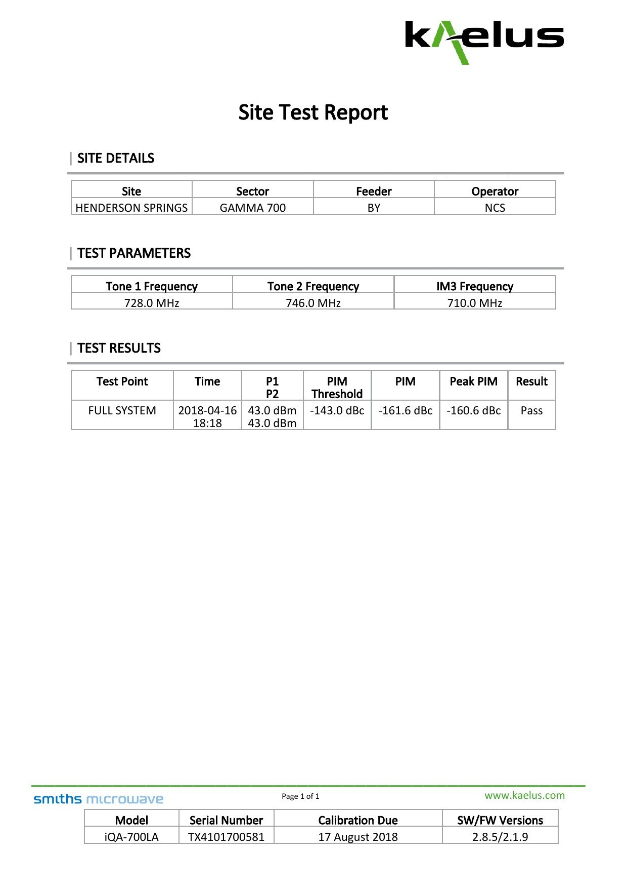
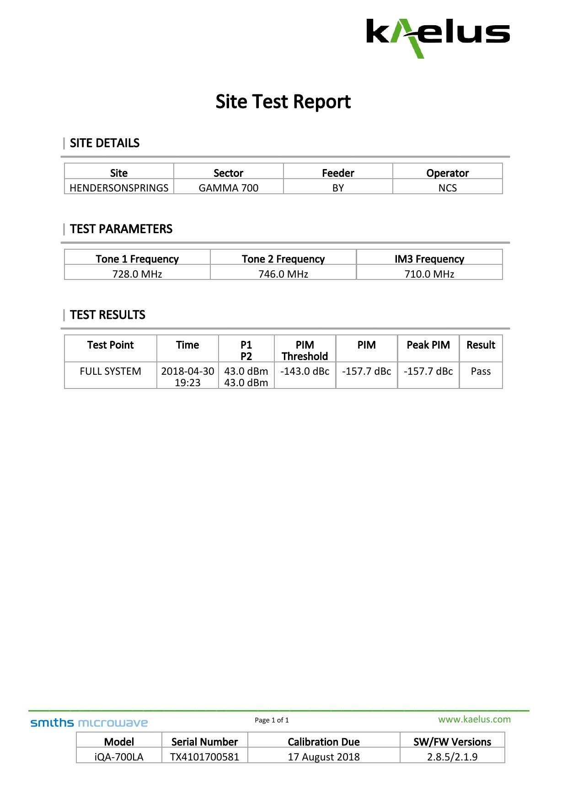
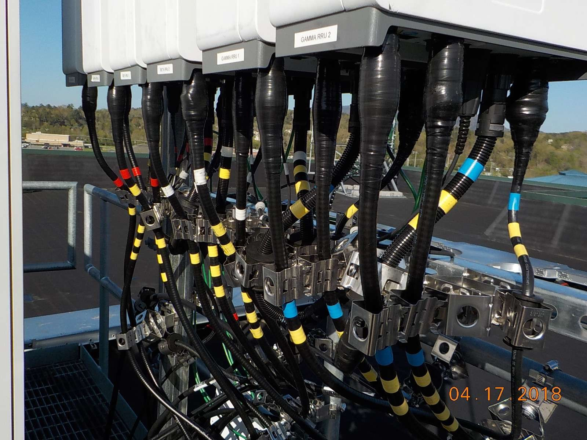
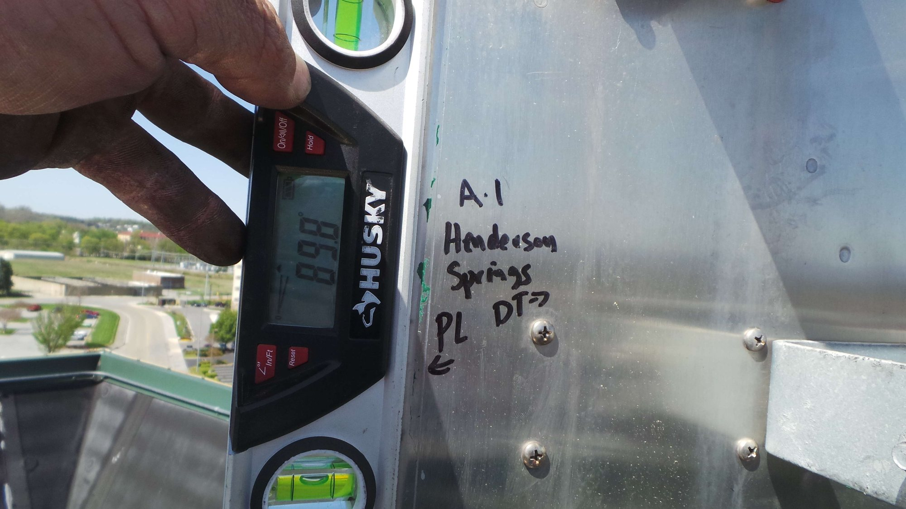
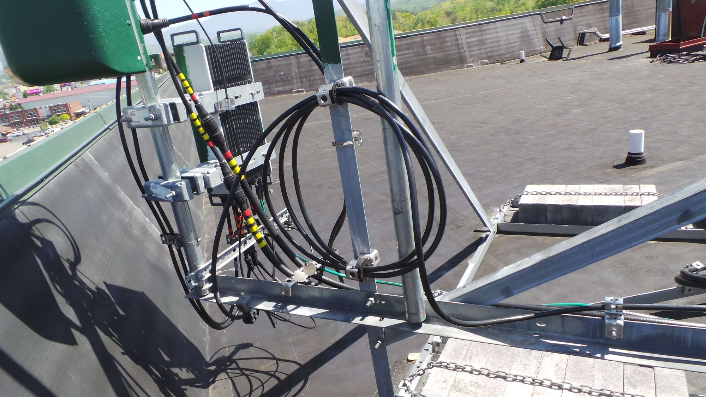

My role: I was the named ground technician on all three site updates. The tower crew performed the physical antenna moves. I coordinated the configuration and RRU32 port plan, handled the ground-side validation and documentation, captured the test package and pre/post results, and verified the handoff state after each change.
3 visitsDocumented trial checkpoints over two weeks
6 ft → 3 ftTwo controlled spacing changes before baseline restoration
24/24 PASSFinal-configuration PIM reports across LTE 700 and AWS
48 tracesFinal DTF and return-loss sweep files across 24 feeder paths
One configuration at a time
- April 17: 6-foot spacing. The antenna pair was moved 6 feet apart. RRU32 ports A and B were assigned to the left antenna and ports C and D to the right. LTE and AWS lines were swept and PIM-tested, with pre/post support checks captured.
- April 24: 3-foot spacing. The pair was moved from 6 feet to 3 feet apart. Rain prevented new sweep and PIM runs, so the same lines were retained; pre/post checks were captured and the update records no alarms.
- May 1: original layout restored. The antennas were returned to the original configuration. LTE 700 and AWS lines were swept and PIM-tested again, with pre/post results and no alarms recorded.



RF evidence across the trial
The archive contains 60 Kaelus PIM reports. Two initial 700 MHz checks failed the -143.0 dBc threshold; both corresponding retests passed. The final restored configuration contains 24 PIM reports and all 24 pass. It also contains 48 raw sweep files: distance-to-fault and return-loss traces for 24 LTE 700 and AWS feeder paths.
Representative Gamma 700 BY PIM sequence · threshold -143.0 dBc
| Checkpoint | PIM | Peak PIM | Result |
|---|---|---|---|
| Initial pre-check · April 16 | -140.5 dBc | -140.2 dBc | FAIL |
| Same-day retest · April 16 | -161.6 dBc | -160.6 dBc | PASS |
| Restored-configuration check · April 30 | -157.7 dBc | -157.7 dBc | PASS |



Physical configuration and documentation
The photos preserve the practical details behind the numbers: labeled radio assignments, color-coded jumper routing, connector paths, and repeatable mechanical readings. That record made each configuration auditable and allowed the original layout to be restored without losing the trial history.



Scope boundary: The surviving records prove the configuration sequence, the test coverage, and the restoration state. They do not record a final optimization conclusion about which spacing performed best, so this case presents the validated trial process without inventing that result.